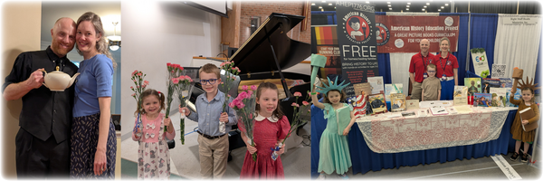
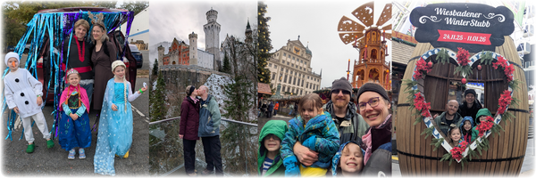
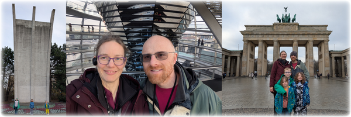
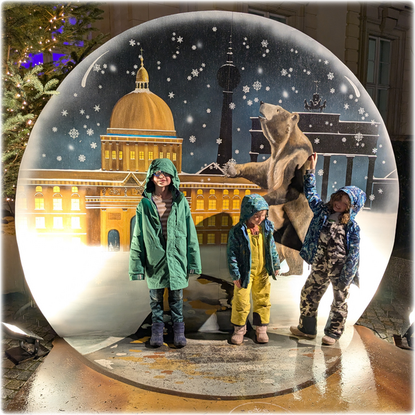

<link rel="stylesheet" href="css/article.css">
<style>
.signoff {
  margin: 15px 0 0 80px;
  margin-left: 80px;
}
.signoff p {
  margin: 0;
}
.signoff p.names {
  margin: 0 0 0 20px;
}
.benediction {
  font-weight: bold;
  text-align: center;
}
</style>
<title>Christmas Greetings 2025</title>
<main>
<div class="pad"></div>
<nav>{% include nav.html %}</nav>
<article>
<h1>Christmas Greetings 2025</h1>

<p>Another year seems to have flown by! Some highlights include:</p>

<ul>
<li>Date trips for Brie and Steve (New Jersey/New York for 13th
    wedding anniversary, West Virginia for a concert)
<li>Birth of our second niece (third nibling), and making a 2nd
    Birthday cake for our older niece
<li>Two Classical Conversations Cycle 1 Memory Masters (Brie and
    Chris) and one Subject Master in History (Una)
<li>Milestone birthday for Brie with so many wonderful notes and
    messages to show her she is loved (thank you all!)
<li>Hicks Family Gathering in Roanoke, VA
<li>Cardiff Family Conference in Pequea, PA
<li>Year of the Summer Camps: Natural Leaders, math camp, creative
    writing camp, rock climbing camp, dance camp, taekwondo camp, two
    Vacation Bible Schools
<li>Trip to Ithaca, NY (Apple Festival, Cornell University, Christ Chapel)
<li>Award-winning Frozen-themed family costumes and trunk
</ul>

<figure>

</figure>

<p>Children's activities keep our lives full and our family active. We
started a math club this year which Christopher attends. Una and Emily
both began piano lessons and American Heritage Girls. All three
children played soccer in the fall. Chris and Steve continue their work
in taekwondo. Brie was inducted into the Daughters of the American
Revolution. In addition to attending homeschool conferences with
American History Education Project, Brie had the pleasure of being
interviewed by the Military Homeschoolers Association and conducting a
live webinar about the Berlin Airlift for Texas Homeschool Coalition.
Steve still enjoys working remotely for Google: this year he joined
the JavaScript standards body as an official Google delegate.
</p>

<figure>

</figure>

<p>Our international trip last year was so wonderful that we decided
to take another one (also, children's passports are burning a hole in
our pockets). We spent twelve days in Germany visiting Munich
(Frauenkirche, Englischer Garten, Deutsches Museum, Glockenspiel,
Residenz, Barbie Museum, Bavarian Observatory), Neuschwanstein,
Augsburg (where Steve's mom used to live!), Rüsselsheim/Wiesbaden (to
visit our friends stationed there and have a terrific American
Thanksgiving), and Berlin (Technology Museum, Allied Museum, DDR
Museum, Berlin Airlift Memorial, Tempelhof Airport, Reichstag,
Brandenburg Gate, Checkpoint Charlie, Schloß Charlottenburg). Given
the timing of our trip, we enjoyed eleven different Christmas Markets
during our time there. It was great fun traveling with friends and we
learned a lot about Germany! Brie's travelog is available upon request
for those who want details. Here we will simply give one story of
personal growth from the trip.</p>

<figure>

</figure>

<p>One of the travel days (all of which were long!) Emily was sharing
her favorite part of the day which was the "glass dome" (atop the
Reichstag in Berlin). She added that her least favorite part was all
the whining she did. Parental units were quick to inform her that
whether she whined or not was within her control. Our self-aware Emily
took this to heart. The next day she told me that she was tired of
walking but she wasn't whining - and she stuck to that all day! Her
circumstances hadn't changed, but her attitude had. What a great
lesson and reminder for all of us.</p>

<p>In researching and then visiting the location of the Berlin
Airlift, we have learned it is a powerful story of reconciliation. May
we all be filled with the love of Christ and the generosity that turns
enemies into friends in 2026 and always!</p>

<div class="signoff">
<p>Love,</p>
<p class="names">Team Hicks
<br>Steve, Brie, Chris, Una, and Emily</p>
</div>

<p class="benediction">We thank you for your love, support, and
friendship, and wish you blessings in the New Year!</p>

<figure>

<figcaption></figcaption>
</figure>

</article>
<div class="pad"></div>
</main>


